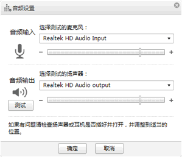

设置音频
您可以设置本地音频效果。
1. 在工具栏中，单击，选择“音视频设置 > 音频设置”。
说明：
- 您也可以将鼠标指针移动到
 或上，在弹出的界面中，单击
或上，在弹出的界面中，单击 。
。 - 打开“音频设置”窗口后，您将听不到系统的声音。关闭该窗口，即可恢复。
系统显示“音频设置”窗口，如图所示。
音频设置

2. 在“音频输入”中选择麦克风设备，您可以拖动麦克风音量条上的标尺，调整音量。
3. 在“音频输出”中选择扬声器设备，单击“测试”，系统会自动播放一段声音，您可以拖动扬声器音量条上的标尺，调整音量。
4. 单击“确定”，完成设置。